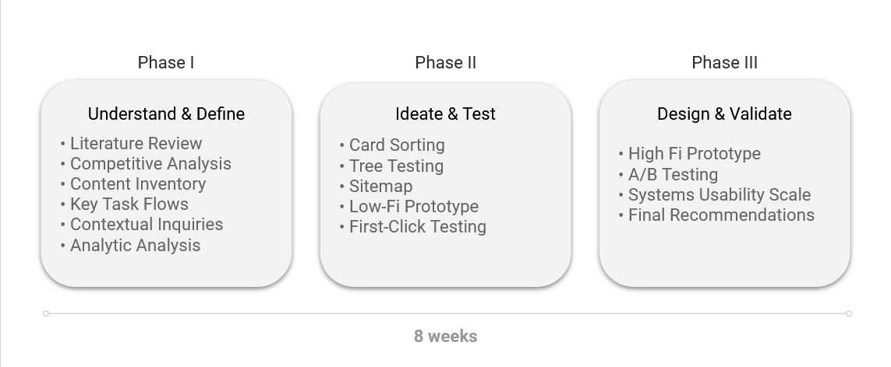
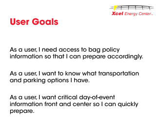
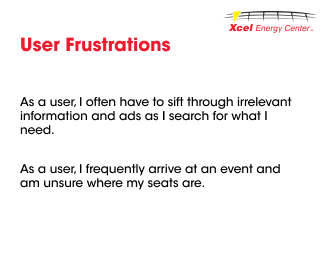
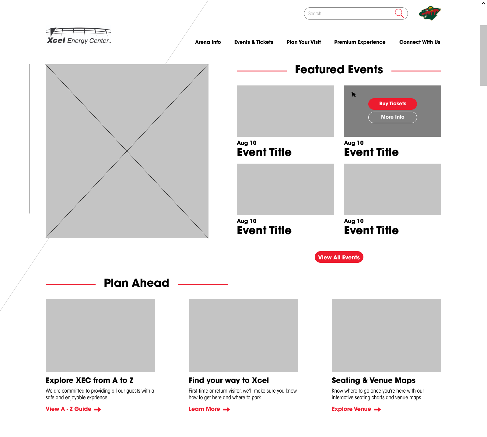
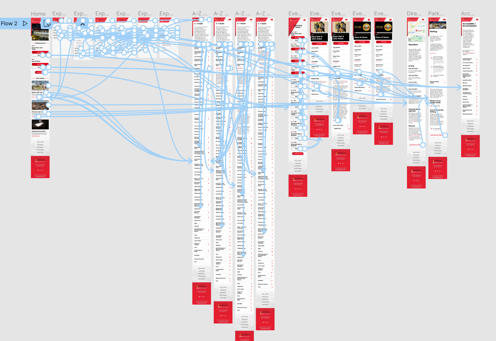

Xcel Energy Center: Design Thinking in E-Tourism
Project Information
- Team: Kaitlin Simpson, Chris Ayala, Ben Green, Justin Millan
Roles : UX Researcher, UX Design Lead- Duration: 3 months (June - August 2021)
- Project Site: xcelenergycenter.com
Project Overview
The Xcel Energy Center (XEC) is a large-scale, multi-purpose arena in Saint Paul, Minnesota servicing upwards of 20,000 people. Our team saw an opportunity to optimize the information architecture and content categorization to improve user flow on the XEC website, which acts as a hub of information about the venue and its events. We used a mixed-methods approach over eight weeks, involving 90+ participants in our user research. We found that our design recommendations held practical significance, and presented our findings to our stakeholder. As of December 2021, Xcel Energy Center has implemented several of the proposed changes.
Project Background
The Xcel Energy Center (XEC) is a large-scale, multi-purpose arena in Saint Paul, Minnesota that services upwards of 20,000 people. Their website acts as a critical information hub for event attendees and end-users seeking information about new events, ticketing, venue policies, and more. Our team saw several opportunities on the XEC website to improve user flow. Our team consulted with the Sales & Marketing Director, who acted as our primary stakeholder throughout the course of the project. We learned that XEC had not previously applied user-centered design principles to the design and development of their website. For us, we saw this as an opportunity ripe with the potential of bringing design thinking to a large player in the tourism and entertainment industry.
Problem Statement
After evaluating the site’s existing architecture and performing additional background research, our team identified that the primary use case for the arena's customers was to gather information to help plan their visit to the venue. Armed with this knowledge, we knew we wanted the user’s experience to center on accessing that information as efficiently as possible. We ultimately arrived at this primary problem statement: how can we improve the information architecture on the Xcel Energy Center website in order to optimize user flow?
Our Objectives
- Improve overall user flow, by improving user success rate and/or completion time when performing key tasks
- Restructure top and secondary-level navigation
- Create a content categorization framework for top-level navigation that is conduvice to user mental models
- Help facilitate efficent access to key pieces of information
Process & Methods
Our team employed a user-centered design methodology to address our problem statement. We broke our process into three main stages over the course of eight weeks, with iterative cycles within each stage:
- Phase 1: Understand & Define
- Phase 2: Ideate & Test
- Phase 3: Design & Validate

Understand & Define
Our team employed a mixed-methods approach in order to understand the context of our problem. We began with a literature review and competitive analysis, improving our understanding of how the live entertainment industry functions and what best practices were in play. These two methods were also helpful in understanding how to avoid dark patterns and exploitative practices.
Following our literature review and competitive analysis, we performed a content inventory and conducted contextual inquiry interviews. These allowed us to begin identifying problem areas on the site, as well as analyze our user’s goals and pain points.
Phase One Findings
- Content, personalization, and interactivity were the highest priority usability attributes for e-tourism and entertainment sites
- Industry leaders provided direct access to venue policies and FAQ pages
- Site pages were out of date and some shared identical information and content layout
- Users do not utilize venue websites for ticket purchasing
- Users utilize venue websites for general event and venue information; the most sought-after information falling under: Transportation & Parking, Safety Guidelines, Seating Charts, Event Details, and Ticket Pricing.
- Users seek for 'Frequently Asked Questions' content and menu items
We used the following user stories to understand their goals and frustrations when moving on to our ideation and design phases:


Given our understanding of our users, we finalized several key task scenarios to explore when designing: finding general information regarding venue policies, and finding specific information for upcoming events. We developed key task flows to provide a framework for our future steps:
Ideate & Test
Our second phase focused on solidifying a new information architecture for XEC. We performed three rounds of card sorting and developed an early-iteration of a new sitemap to inform further IA tests. We then performed a treejack test, implementing changes to our sitemap based on the user feedback. Next we began developing a low-fidelity prototype to test top-level navigation changes and map out ideas for new content blocks. Based on our earlier research, we wanted to give direct access to highly sought-after informatio. We did so by creating content blocks on the homepage with direct calls-to action. We tested the proposed architecture and these new content blocks by using the following low-fideltiy prototype for a first-click test:

Findings
Our several rounds of IA testing allowed us to continuously iterate on our proposed changes as the project progressed. We were able to play around with the introduction of the content blocks, as well as testing out a separate 'FAQ' navigational item. By the end of our second phase, we had iterated on a proposed site map three times. The third iteration was our guide when designing in the final stage:
Design & Validate
Our third and final phase focused on creating an interactive, high-fidelity prototype. As the design lead for the team, I spearheaded efforts in researching the Carbonhouse content management system and designing the prototype while adhering to the existing design system and brand guidelines for the Xcel Energy Center.
The high-fidelity prototype was created using Figma. We chose to stick to a mobile prototype as the data we collected in our first phase suggested users primarily use mobile devices to access the XEC site. The major design decisions I made when creating this prototype centered around increasing the user's interactivity with the site while staying efficient and effective. I implemented the new content blocks, decreased instances of irrelevant information, included tabs to reduce extraneous scrolling, and decreased instances of extraneous clicks to lessen the burden on users.
The XEC prototype is large and detailed, and is best viewed by accessing the Figma file. Check it out:

To evaluate our design, we conducted A/B usability tests using the key task scenarios we focused one earlier in the project. After conducting the tests and collecting data, we analyzed our results by performing two statistical tests. We found, overall, that participant performance improved when using the new prototype. All participants completed the tasks at a faster rate, and reported higher scores on the System-Usability Scale (SUS) for the new prototype over the existing site (mean SUS scores of 84 and 63.5, respectively).
We were unfortunately unable to claim statistically significant findings, but we did feel we could claim practical significance. Therefore, we arrived at our final sitemap and design recommendations for our stakeholder:
- Restructure Main Navigation
- Take Focus Off Ticket Purchasing
- Make General Event and Venue Information Front and Center
- Streamline Flow to "FAQs" and Venue Policies
- Reduce Extraneous Scrolling
- Reduce Number of User Clicks
- Consider Combining Related Pages (Directions & Parking)
Retrospective
At the end of this project, we were quite happy with what we presented to Xcel Energy Center, but as designers and researchers, we knew UX is never really finished or perfect. Reflecting on the project, we felt we could have used more qualitative measures in our design process. While we used contextual inquiry interviews, we wondered how other user interviews or cognitive walkthroughs could have contributed to our understanding of XEC users. Had our timeline provided a longer runway, we would have loved to employ additional, qualitative tests.
As of December 2021, Xcel Energy Center has implemented several of our proposed changes, including the restructuring of the top-level navigation and use of content blocks on the homepage. We recommend the XEC team employ a survey in the future to determine if users encounter additional pain points or ambiguities missed by our own team during this project.
Still curious? Read the entire project report here!